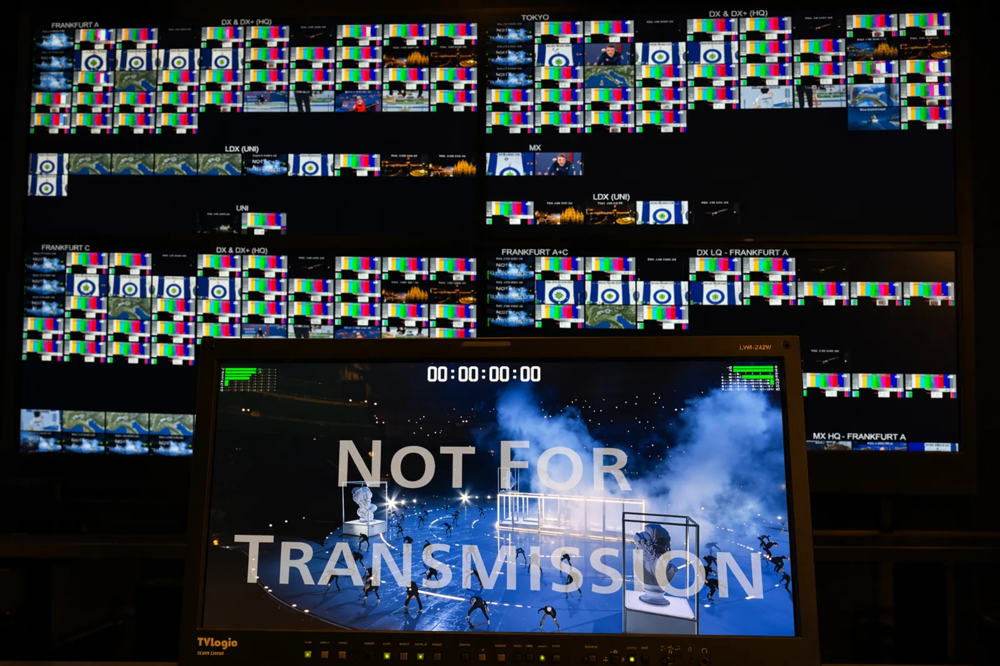
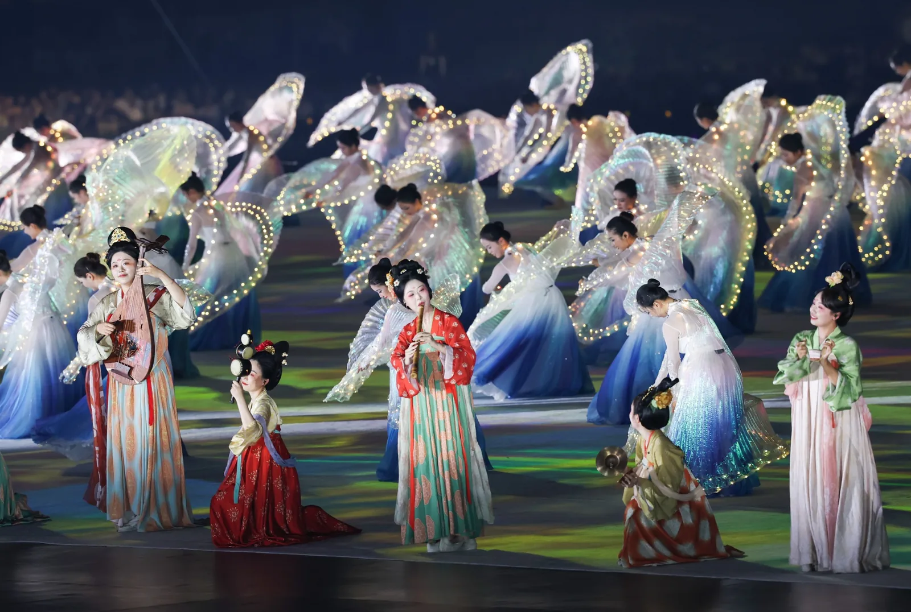
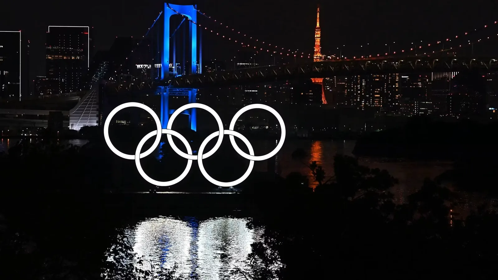
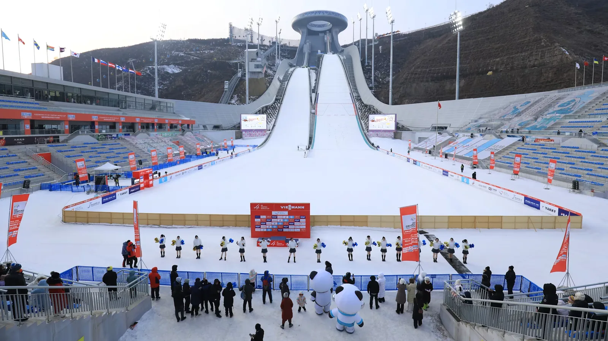
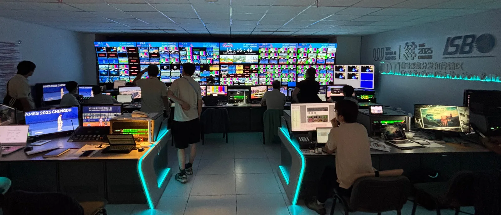
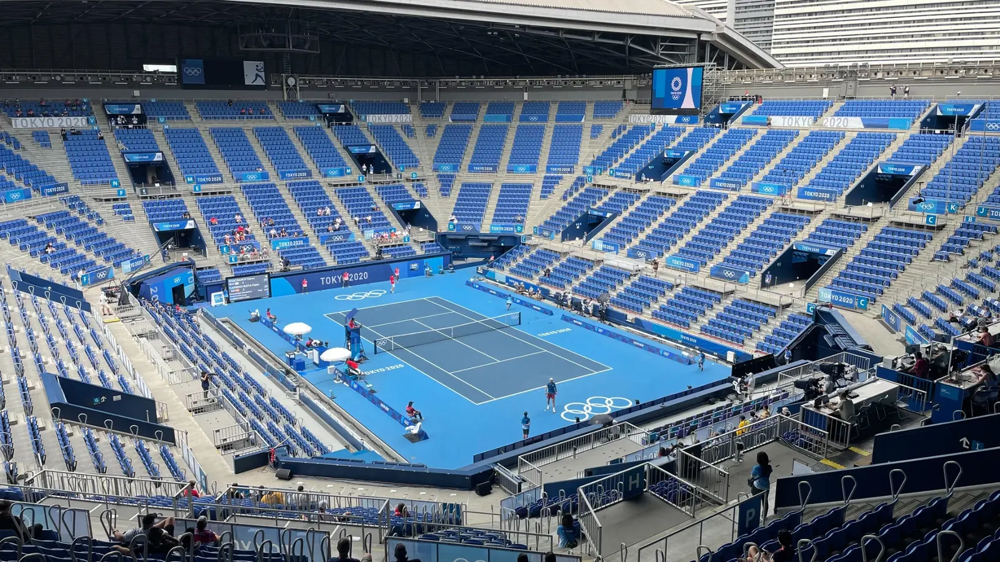
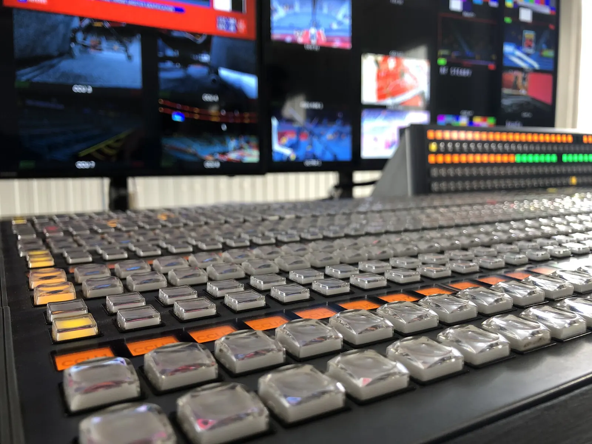
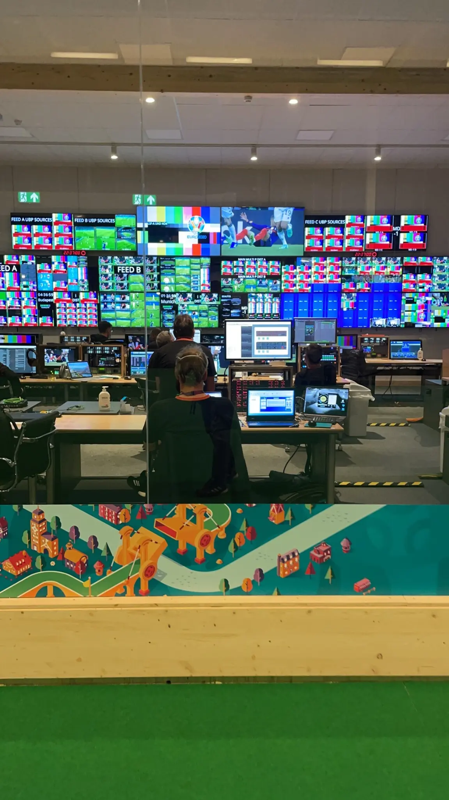
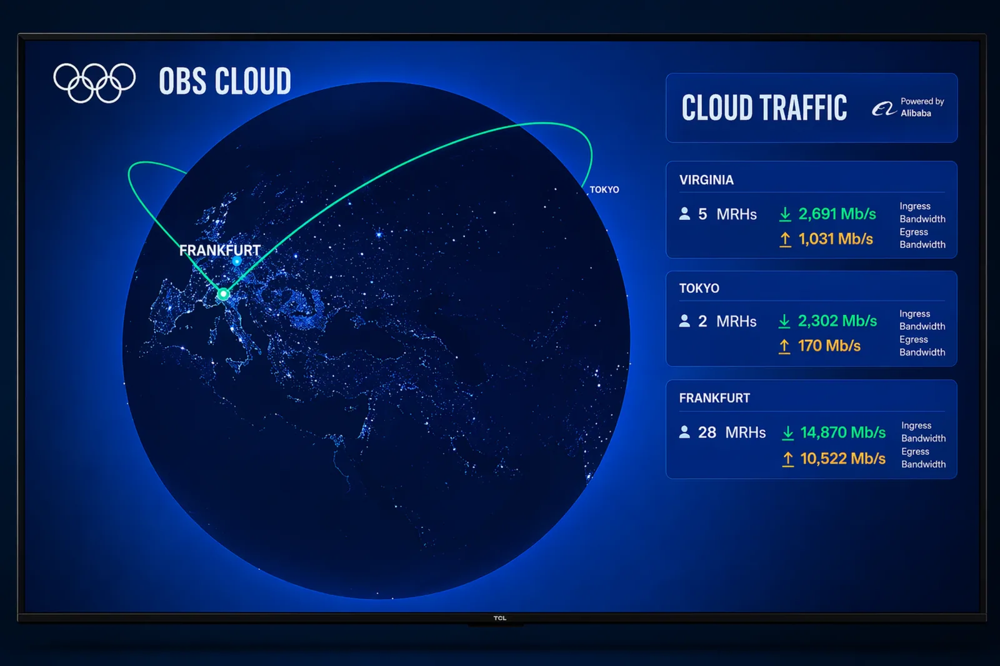
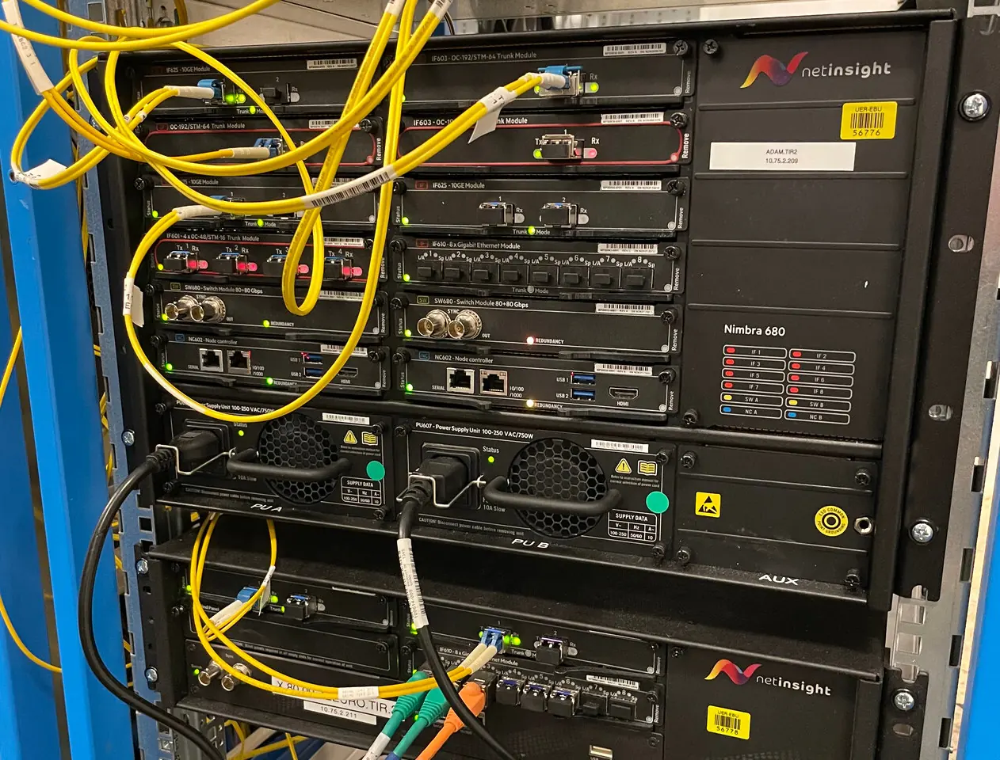

Lead Virtualization Engineer · Olympic Broadcasting Services
Milano Cortina 2026
Hybrid architecture, platform evolution and operational planning across one of the most demanding environments in international sports broadcasting.
Javier Hidalgo
Hybrid cloud infrastructure, media distribution, IP networks and live technical operations for host broadcasters, major sports events and high-pressure production environments.
Profile
Javier works across broadcast engineering, cloud infrastructure and live event delivery, with experience spanning host broadcast, studio systems, telecom coordination and contribution workflows.
His background combines technical operations, platform delivery and cross-team coordination in environments where reliability, timing and sound judgement directly affect execution.
Technical scope
Built around hybrid cloud environments, IP-based media transport, broadcast systems engineering and operational tooling for large-scale live delivery.
VMware, AWS and Alibaba Cloud environments built for scale, resilience and operational control.
SRT, IP contribution and live distribution workflows across complex international delivery environments.
MCR, PCR, outside broadcast and temporary systems for live event production and delivery.
Python, Terraform, Ansible and IP media networks including ST 2110 and ST 2022-2.
Featured events
Experience across host broadcast, rights-holder delivery and live technical operations in major international sports events.

Lead Virtualization Engineer · Olympic Broadcasting Services
Hybrid architecture, platform evolution and operational planning across one of the most demanding environments in international sports broadcasting.

Olympic Broadcasting Services · LiveCloud
Large-scale international delivery, rights-holder support and high-availability operations during the Paris 2024 cycle.

Telecom Manager · International Sports Broadcasting
SRT distribution planning, venue-to-IBC contribution design and technical coordination across a multi-venue delivery environment.

Broadcast Systems Engineer · Olympics.com
Broadcast systems engineering across studio operations, temporary builds, cloud transition and live event support.

Broadcast Systems Engineer · Olympics.com
Digital and broadcast systems support within the Olympics.com environment during the Winter Games cycle.

Control rooms
Operational command during live delivery

Major venues
Environments where readiness and timing matter

Engineering leadership
Coordination across teams, vendors and stakeholders
Selected projects
Support for large-scale cloud distribution, rights-holder onboarding and high-availability operations under Olympic-level timing and delivery requirements.
Architecture ownership, platform planning and operational preparation across a hybrid live distribution environment.
Design of the global SRT distribution model together with venue-to-IBC contribution planning and technical coordination across a multi-venue event.
Experience
Olympic Broadcasting Services
Leading cloud live distribution platform architecture and operations across Gangwon 2024, Paris 2024 and Milano Cortina 2026.
International Sports Broadcasting
Designed the global SRT distribution model and advised venue-to-IBC contribution architecture for Chengdu.
Saudi Sports Company
Supervised stadium technical readiness and match-day broadcast operations for the Saudi Pro League.
Olympics.com
Supported cloud transition, studio systems, temporary event builds and outside broadcast projects.
Where I add value
How I work
Ownership, judgement and coordination in critical delivery environments.
Where I can contribute
Senior leadership roles or selected advisory work around delivery readiness.
Relevant to broadcasters, host broadcasters, global sports organisations and technical leadership teams looking for hands-on ownership of critical platforms and delivery environments.
Also relevant for selected external work in architecture review, event readiness, delivery planning and technical coordination.

Operational environments
A working context shaped by control rooms, contribution paths, venue operations and technical environments where delivery, escalation handling and decision-making happen in real time.

Coordination
Engineering, vendors and operational teams aligned around delivery.

Systems
Signal paths, monitoring and infrastructure under live-event constraints.
Capabilities
Experience across cloud distribution, broadcast systems, IP workflows, vendor coordination and operational readiness for major live events.
Contact
Madrid, Spain
Available for international roles, project-based work and selected consulting support.